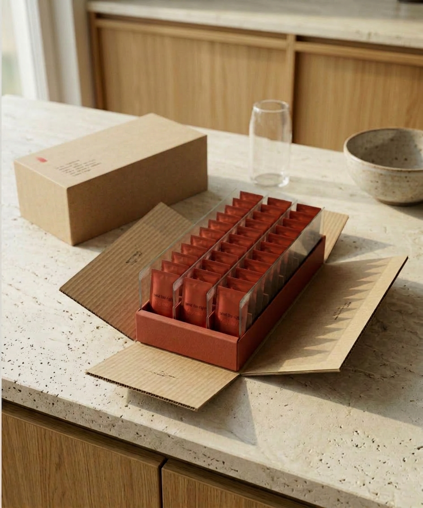
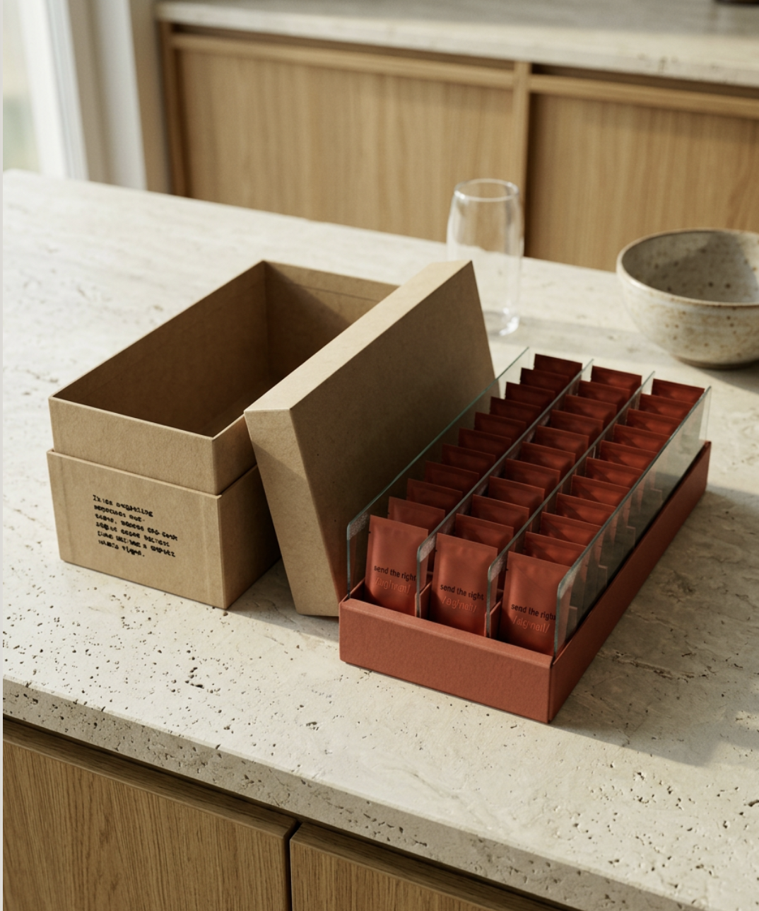

The Visual System
§1 — The color system
Hold a signal packet in your hand. Press the foil flat. The red has weight — it is not a screen color but a paper color, the color of matte stock that has absorbed the dye instead of sitting on top of it. Now look at the tray underneath. The red is the same hue, but the material is paperboard, not foil — so the light returns differently. The brand's red is not one color. It is the same color rendered across three materials, each of which holds it slightly differently.


The brand uses three colors. No fourth.
Signal Red is the keystone. It's the recognition color — from across a kitchen, the eye finds signal before the mind reads it. The wordmark. The tray. The packet. The mailer. The cover of the manifesto.
Rose Linen is the warm-neutral. N°001 packets. Long-form prose backgrounds. Paper left in sun. Also the mid-tone color — cards, quieter background surfaces, the codex's contents page.
Deep Evening is the dark color. N°003 packets. Dark-mode pages. The gate. The color the brand wears in its serious moments.
§2 — Wordmark and typography
The first time a customer reads the wordmark, they read it out loud. The slashes mean pronounce this. The phonetic marks mean this is how. /sɪɡˈnɑːl/ is not a logo. It is a pronunciation lesson the brand quietly insists on. The letters render in Signal Red; the IPA notation (/, ˈ, ː) recedes into Rose Linen — phonetic grammar that frames the word without competing with it.
The wordmark is set in Plus Jakarta Sans 700 — the only brand font with the glyphs it needs. The other two faces in the system have ~362 and ~110 glyphs respectively, and neither covers IPA Extensions; if the wordmark were set in either, the visible result would be four characters in the brand face and five in whatever generic system font the browser fell back to. Using Plus Jakarta is the honest choice.
Three typefaces carry the system:
Anguita Sans is the primary display face. The brand's logo font. Anguita Sans Black is what shows up on headlines, section labels, card titles, the cover. Self-hosted from Latinotype (fonts/AnguitaSans.otf). Weight 900 only — there is no italic; the brand earns emphasis through color and size, not slant.
Bebas Neue is the secondary display face. Tall, condensed, geometric — the contrast to Anguita's broader display weight. Bebas does the headline accents, the stylized "I" in "INSDR Wellness," moments where tall, narrow letters are the point.
Plus Jakarta Sans is the body face — and the wordmark face. Body prose, captions, footer text, register labels. Default weight 300 — light, generous in the white space inside each letter, designed to be read at length. And in weight 700, the IPA wordmark.
The three-font system above is the complete type system. There is no fourth font for "editorial warmth." Contrast lives in weight, scale, color, and the wordmark exception.
§3 — The packaging system
A kraft-colored box arrives on the counter. The customer's address is printed directly on the box — no separate sleeve, no shipping label band, subtle layer of marketing packaging. The box is two pieces: a slip-off lid with a snug friction fit, and a base whose four side panels are hinged at the bottom and scored to bias outward. The lid's interior walls hold the four panels upright while the box is sealed.
The customer lifts the lid. The friction releases. The four panels fold outward and lay flat around the tray. The tray is revealed standing upright on the counter — low walls, signal-red matte paperboard, ~230 by 70 millimeters. Thirty packets stand on edge between four full-height frosted acetate dividers. The top is open. The product is visible the moment the lid is off. The interior faces of the four panels are a reveal surface — what the customer reads at the moment of opening.


The tray is the canonical product format. Same shape every time, regardless of which SKU and regardless of which order in the customer's history. The only thing that varies is the color of the individual packages (Rose Linen for N°001, Signal Red for N°002, Deep Evening for N°003).
Four full-height frosted acetate dividers run along the long side of the tray. Each carries a decode artifact from the brand's visual system — IPA wordmark variants, surface marks, or intentional silence. Light incision, no ink, frosted acetate; the etching is visible only from the side, at a low angle. The dividers are the tray's quietest decode layer.
Three rules guide every packaging decision:
Cost #1. Per-unit cost ~$0.95–1.55. Default to the cheaper option unless function loses.
Red Dot worthy. Mono-material where possible. No glue. Mechanism over decoration. Print only where it informs.
Supplement-cliché-breaker. No bottles. No childproof caps. No bro labels. Reference class: Aesop / MUJI / Le Labo — not GNC.
§4 — The load-bearing artifacts
Four objects in the system carry meaning beyond their function. Each was designed to reward a closer look.
The first is the IPA wordmark itself. Held against the packet front, it is a label. Debossed into the empty tray floor, revealed only at the end of a 30-day cycle, it is a quiet end-marker. Etched into a frosted acetate divider, lit from the side, it is a found-not-planted artifact for the customer who looks. Same wordmark, three contexts, three different jobs.
The second is the annual coin. Brushed metal, ~38mm in diameter, IPA wordmark on the face, Roman year on the reverse. Arrives in a small kraft paperboard box, closed with a Signal-red wax seal stamped with the IPA glyph cluster pressed onto the lid. Earned by completing a year of the practice. Year I or nothing. Never sold. Never upsold. The coin is the brand's tenure recognition object — what the customer holds in their hand at the end of a year that they could not have held a year before.
The third is the decode card. It is the artifact inside the Send a Signal envelope — the brand's $5 physical-mail demo, available at checkout to any customer who has just committed to their own order. The card is A6, folded, mounted with one foundation packet on four corner slits and packed with an A7 insert that teaches what signal is. No personalization. No sender note. The CTA on every card reads the same way: YOUR TURN → SEND A SIGNAL. The card carries the brand's deepest voice register: a short body of copy framing the gift as care arriving from inside the practice, closed by the line /sɪɡˈnɑːl/ received. The "decode" is what the recipient does with it — the brand's register is not explained, the gift's meaning is not announced. The recipient reads it, understands it as care arriving without performance, and is invited to send their own.
The fourth is the entrainment wordmark and signal sound, paired. On the manifesto's first frame, two wordmark ghosts sit at a slight horizontal offset — the brand mark is doubled, out of register. Two audio tones play at the same moment, 10 Hz apart, audible as a beat pattern. Over about two seconds, both converge in lockstep — the tones drift to unison on A4, the ghosts drift to perfect alignment. The logo reaches clear exactly as the sound fades. Heard once at the first ritual; recalled across every subsequent one. The brand calls the mechanic entrainment — physiological pull made audible and visible at the same time.
What makes an artifact load-bearing: meaning the customer earns by encountering it more than once. Decorative objects are not load-bearing; they're additions. The brand commissions objects that operate the product, carry the practice forward, recognize tenure, or pass the merch selection criteria — deeper meaning than decoration, something specific, something the rest of the brand cannot say.
§5 — The visual register
The brand's visual register is the hold: quiet persistence in routine work. Effort that has become habit, not effort being performed. Realistic and raw.
The work is the subject; the body is not. Posture is whatever the work produced. Light is whatever the situation offers. The brand documents continuation — not aspiration, not transformation, not lifestyle.
The antithesis is wellness-and-influencer imagery: bodies as objects of evaluation, performance staged as outcome, aspiration presented as identity. The brand refuses this register. The customer is the subject of the practice, not the object of a photo.
The full register doctrine — the load-bearing artifact tiers (T1 canonical / T2 customer-owned / T3 reverse-causality found-not-planted) — lives in the Visual Register Playbook at notjustwellness.github.io/signal-deck/visual-register-playbook.html (password 54321).
§6 — The format
The brand's primary visual format is first person. Camera = the subject's eyes. The film holds approximately 30 seconds of a daily situation, with Signal landing as a single beat inside it. Raw. Unstaged. Ambient.
The body is not in frame because the body is not the subject. The viewer doesn't watch someone live the practice — they live it themselves. Aspiration cannot stage what it cannot show.
No single 30-second sequence is canonical. The situation varies — the morning, the kitchen, the walk, the room before bed. Other people may appear in frame: a partner, a child, a friend. Their dialogue can be unhurried, even playful, as long as the world it lives in is the brand's.
Stills are allowed in support of the primary format, first-person-framed where possible. Other formats — third-person, product shots, founder content — are allowed only when they serve the primary; never as the primary.
§7 — What the brand will not show
Walk past a competitor's display in a Whole Foods. Notice the visual language: the smiling-too-hard model, the abstract gradient mountain ranges, the hand-holding-product shot, the marketing-as-science chart. Each of those visuals carries the same failure pattern as the copy in Chapter 02. The brand refuses them — not because they are ugly, but because they tell the wrong story.
Four representative refusals:
The lab-coat appeal-to-authority. White coats, microscopes, gloved hands holding beakers. Authority performed, not earned.
The before-and-after body. Transformation-arc imagery; body change as promise. The brand does not evaluate bodies.
The aspirational-lifestyle shot. Golden-hour yoga, hand-on-hip confidence, smiling-too-hard models holding the product. The customer is the object of the photo, not the subject of the practice.
Borrowed-authority Mandarin / Chinese characters as decoration. Western brands appropriating Chinese characters for "ancient wisdom" cred. The brand uses no foreign-language ornament; it cannot tolerate the cliché in others.
§8 — Pointer
The chapter covered what the brand looks like. Chapter 04 — Product Architecture covers what the brand makes — the formulation, SKU sequencing, dose detail, biochemistry. The visuals here need the products in Chapter 04 to give them something to render.